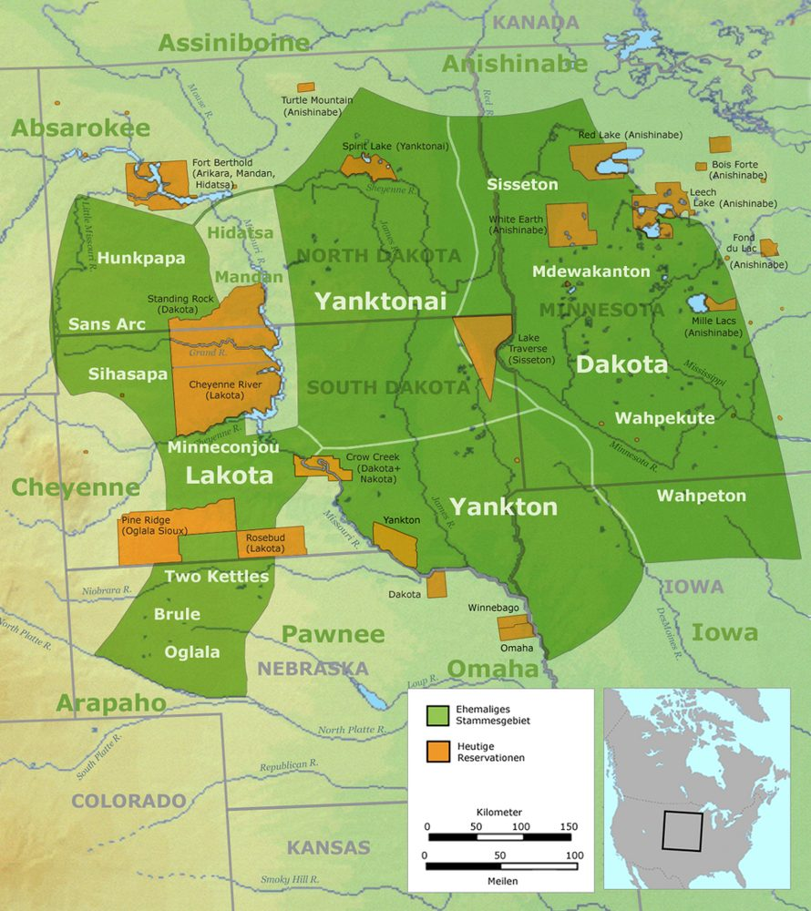
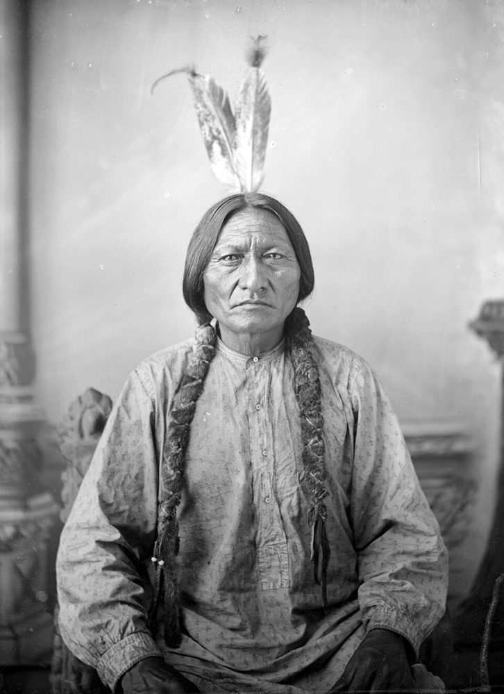
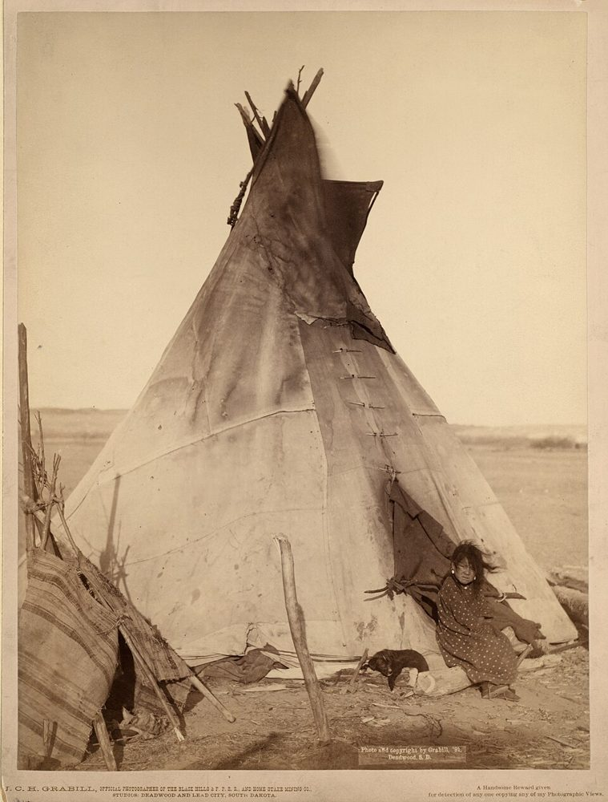

The Oceti Sakowin archive · lessons
Seven lessons, told our way
A free course in who we are, written at Fort Peck for our own young people and for anyone who wants to learn from the source. Each lesson has a story, the words you need, pictures from the record, questions to talk over, and links to the museums, colleges and tribal nations that keep this knowledge alive.


Lesson 1Identity and namingThe Seven Council Fires Lesson 2How the world was madeWakan Tanka, Inyan and Turtle Island
Lesson 2How the world was madeWakan Tanka, Inyan and Turtle Island
 Lesson 3The gift of the pipeWhite Buffalo Calf Woman and the seven rites
Lesson 3The gift of the pipeWhite Buffalo Calf Woman and the seven rites

Lesson 4Guardians of the peopleSitting Bull, Crazy Horse, Red Cloud, Black Elk Lesson 5Wars for the landRed Cloud's War, the Little Bighorn and Wounded Knee
Lesson 5Wars for the landRed Cloud's War, the Little Bighorn and Wounded Knee
 Lesson 6Winter storiesThunderbird, Iktomi, Unktehi, Deer Woman and the wrestled ghost
Lesson 6Winter storiesThunderbird, Iktomi, Unktehi, Deer Woman and the wrestled ghost

Lesson 7Engineers of the open plainsTipi, travois, pemmican, winter counts and sign language
For teachers
Using these lessons in a classroom
Each lesson fits a single class period: read the story together (ten to fifteen minutes), work through the key words, then use the circle questions for discussion. The lessons line up with the Oceti Sakowin Essential Understandings used in South Dakota and with Montana's Indian Education for All. Print freely; credit Sacred Ones and the photographers named under each picture.
WoLakota ProjectThe Oceti Sakowin Essential Understandings and classroom videos with elders.
Montana Indian Education for AllState lesson plans on Montana's tribal nations, including Fort Peck.
Akta Lakota Museum and Cultural CenterOnline exhibits for every topic in these lessons.
Lakota Language ConsortiumHear every Lakota word in these pages pronounced.